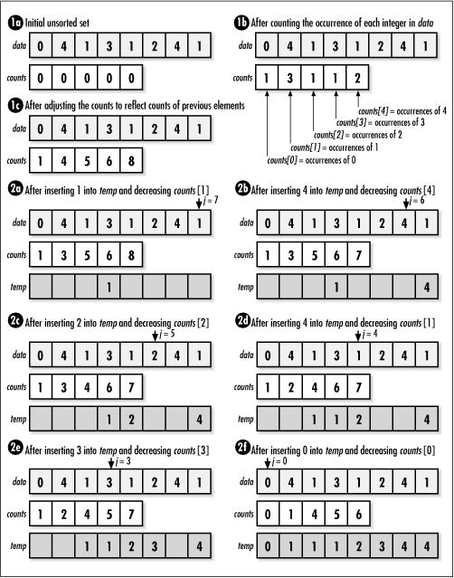

12.13 Implementation and Analysis
of Counting Sort
Counting sort
works fundamentally by counting how many times integer
elements occur in an unsorted set to determine how the set
should be ordered. In the implementation presented here,
data initially contains the unsorted set of
size integer elements stored in a single block
of contiguous storage. Additional storage is allocated to
store the sorted data temporarily. Before ctsort returns, the sorted set is
copied back into data.
After allocating storage, we begin by
counting the occurrences of each element in
data (see Example
12.6). These are placed in an array of counts,
counts, indexed by the integer elements
themselves (see Figure
12.6, step 1b). Once the occurrences of each element in
data have been counted, we adjust the counts
to reflect the number of elements that will come before each
element in the sorted set. We do this by adding the count of
each element in the array to the count of the element that
follows it (see Figure
12.6, step 1c). Effectively, counts then
contains the offsets at which each element belongs in the
sorted set, temp.
To complete the sort, we place each element
in temp at its designated offset (see Figure
12.6, steps 2a- f ). The count for each element is
decreased by 1 as temp is updated so that
integers appearing more than once in data
appear more than once in temp as well.

The runtime complexity of counting sort is
O (n + k), where n is the number of integers in the
data and k is the largest
integer value in the set being sorted, plus 1. This is because
counting sort consists of three loops, two that run in time
proportional to n, and one that
runs in time proportional to k.
For space, counting sort requires two arrays of size n and an array of size k.
Example 12.6.
Implementation of Counting Sort /*****************************************************************************
* *
* ------------------------------- ctsort.c ------------------------------- *
* *
*****************************************************************************/
#include <stdlib.h>
#include <string.h>
#include "sort.h"
/*****************************************************************************
* *
* -------------------------------- ctsort -------------------------------- *
* *
*****************************************************************************/
int ctsort(int *data, int size, int k) {
int *counts,
*temp;
int i,
j;
/*****************************************************************************
* *
* Allocate storage for the counts. *
* *
*****************************************************************************/
if ((counts = (int *)malloc(k * sizeof(int))) == NULL)
return -1;
/*****************************************************************************
* *
* Allocate storage for the sorted elements. *
* *
*****************************************************************************/
if ((temp = (int *)malloc(size * sizeof(int))) == NULL)
return -1;
/*****************************************************************************
* *
* Initialize the counts. *
* *
*****************************************************************************/
for (i = 0; i < k; i++)
counts[i] = 0;
/*****************************************************************************
* *
* Count the occurrences of each element. *
* *
*****************************************************************************/
for (j = 0; j < size; j++)
counts[data[j]] = counts[data[j]] + 1;
/*****************************************************************************
* *
* Adjust each count to reflect the counts before it. *
* *
*****************************************************************************/
for (i = 1; i < k; i++)
counts[i] = counts[i] + counts[i - 1];
/*****************************************************************************
* *
* Use the counts to position each element where it belongs. *
* *
*****************************************************************************/
for (j = size - 1; j >= 0; j--) {
temp[counts[data[j]] - 1] = data[j];
counts[data[j]] = counts[data[j]] - 1;
}
/*****************************************************************************
* *
* Prepare to pass back the sorted data. *
* *
*****************************************************************************/
memcpy(data, temp, size * sizeof(int));
/*****************************************************************************
* *
* Free the storage allocated for sorting. *
* *
*****************************************************************************/
free(counts);
free(temp);
return 0;
} |